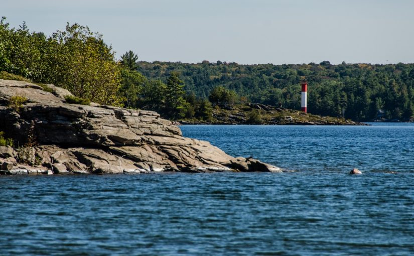

While Covid-19 is happening, I no longer have the chance to travel, but from past experience, I used to go camping every summer break in various camping sites. Camping in general allows me to disconnect from the loud city and such, to appreciate wildlife more. One of my favourite camping sites is Killbear Provincial Park. It has a huge lake that my family and I usually go kayaking or swimming in. I’ve also had chances to go visit Montreal, Quebec since my sister attends university there. It also has a similar vibe to Toronto except much busier. Though, it’s absolutely wonderful to visit in winter as they have old monuments that really make it aesthetically pleasing to take a walk through at night.
|
A night in Old Montreal. |

Killbear Provincial Park. |